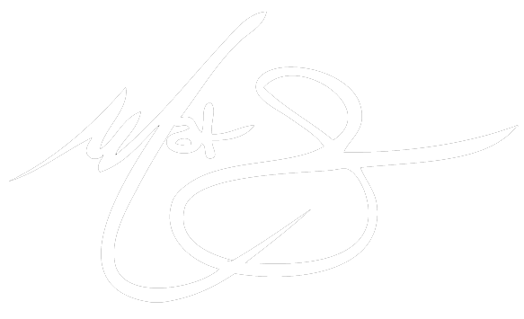

MATINY LOUIS
ARTIST | DEVELOPER | THINKER
ABOUT ME
Computer science is mainly about problem solving and creativity. For most of my life, I've been a big fan of both. It took me many years to realize this, though. In the meantime, I've been a math tournament champion, lover of strategy in games, and an artist. I've always been intrigued by the nitty gritty of the creative process and basic life hacks. Computer science is not only a broad outlet for the aforementioned, but a profitable one.
Tools I Use